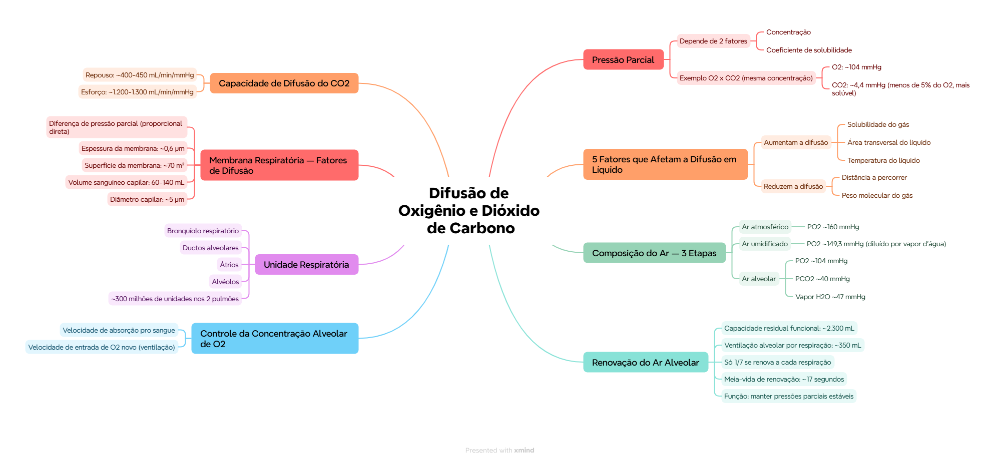

🎯 O que você vai conseguir fazer depois desse capítulo
Explicar por que a pressão parcial de um gás depende da concentração E do coeficiente de solubilidade
Nomear os 5 fatores que afetam a difusão de um gás em líquido
Descrever a composição do ar em cada etapa (atmosférico → umidificado → alveolar)
Explicar por que a renovação do ar alveolar é lenta e por que isso é vantajoso
Nomear os 5 fatores que determinam a velocidade de difusão pela membrana respiratória
Comparar a capacidade de difusão do CO₂ em repouso x esforço
⚗️ Pressão parcial: não é só concentração
A pressão parcial de um gás dissolvido depende não só da sua concentração, mas também do seu coeficiente de solubilidade. Isso explica um dado que costuma surpreender:
💭 Com a MESMA concentração (3,3 mmol/L): o O₂ exerce ~104 mmHg de pressão parcial, mas o CO₂ exerce só ~4,4 mmHg — menos de 5% da pressão do O₂! Isso acontece porque o CO₂ é muito mais SOLÚVEL que o O₂. Na prática: o corpo consegue transportar mais CO₂ exercendo muito menos pressão.
🌊 5 fatores que afetam a difusão de um gás em líquido
Fator
Relação com a difusão
Solubilidade do gás no líquido
Mais solúvel = mais difusão
Área transversal do líquido
Mais área = mais difusão
Distância a percorrer
Mais distância = MENOS difusão
Peso molecular do gás
Mais peso = MENOS difusão
Temperatura do líquido
Mais temperatura = mais difusão
📌 O que o professor cobra nesta seção: os 5 fatores completos, com a direção certa de cada relação (2 deles reduzem a difusão quando aumentam: distância e peso molecular — os outros 3 aumentam a difusão quando aumentam).
🌬️ De onde vem o ar alveolar — 3 etapas
Etapa
Composição
Ar atmosférico
PN₂ ~600 mmHg, PO₂ ~160 mmHg
Ar umidificado
PO₂ cai pra ~149,3 mmHg (diluído pelo vapor d'água, ~47 mmHg)
💡 Repare a queda progressiva do PO₂: 160 (atmosférico) → 149,3 (umidificado) → 104 (alveolar). Cada etapa "dilui" ainda mais o oxigênio antes dele finalmente chegar no alvéolo.
Em 34 segundos, chega a metade de uma "nova" ventilação alveolar completa
Em 8 segundos, dobra o volume trocado
🟢 Por que a substituição precisa ser LENTA: se o ar alveolar fosse completamente trocado a cada respiração, as concentrações de O₂ e CO₂ no sangue oscilariam violentamente a cada ciclo respiratório. A renovação lenta e parcial funciona como um "amortecedor" — mantém as pressões parciais alveolares (e, portanto, sanguíneas) estáveis mesmo entre uma respiração e outra.
🎛️ O que controla a concentração de O₂ nos alvéolos
2 fatores determinam a concentração/pressão parcial de O₂ (e CO₂) nos alvéolos:
Velocidade de absorção do O₂ pro sangue
Velocidade de entrada de O₂ novo pelos pulmões (ventilação)
🏥 Regra prática: quanto mais rápido o O₂ é absorvido pelo sangue, menor sua concentração alveolar (se a ventilação não acompanhar). É um equilíbrio dinâmico entre "quanto entra" e "quanto sai" do compartimento alveolar.
🫁 A unidade respiratória
Formada por: bronquíolo respiratório + ductos alveolares + átrios + alvéolos. Os 2 pulmões têm juntos aproximadamente 300 milhões de unidades respiratórias.
🧱 A membrana respiratória — 5 fatores que determinam a difusão
A diferença de pressão parcial entre o gás alveolar e o gás no sangue capilar é diretamente proporcional à velocidade de transferência daquele gás. Além disso, 4 características físicas da membrana importam:
Fator
Valor de referência
Espessura da membrana
~0,6 µm (apesar de ter várias camadas!)
Superfície da membrana
~70 m² no adulto saudável
Volume sanguíneo capilar
60-140 mL
Diâmetro capilar
~5 µm — a membrana da hemácia costuma tocar a parede capilar
💡 Repare como esses números favorecem a difusão: membrana finíssima (0,6 µm) + superfície gigantesca (70 m², quase o tamanho de uma quadra de tênis!) + hemácia praticamente "raspando" na parede do capilar (5 µm de diâmetro). Tudo isso maximiza a troca gasosa.
📈 Capacidade de difusão do CO₂ — repouso x esforço
Condição
Capacidade de difusão
Repouso
~400-450 mL/min/mmHg
Esforço físico
~1.200-1.300 mL/min/mmHg
✅ O que você deve lembrar
Com a mesma concentração, CO2 exerce <5% da pressão parcial do O2 (mais solúvel). Só 1/7 do ar alveolar se renova por respiração — renovação intencionalmente lenta.
⚠️ Erro comum
Achar que peso molecular maior favorece a difusão — na verdade PREJUDICA (mais peso = menos difusão). Só solubilidade, área e temperatura favorecem quando aumentam.
⚡ Questão rápida
Por que o PO2 cai de 160 mmHg (atmosférico) para 104 mmHg (alveolar)?
Porque o ar é progressivamente diluído: primeiro pelo vapor d'água na umidificação (cai pra 149,3 mmHg), e depois pela mistura com o ar residual do espaço morto e do ar alveolar já presente (cai pra 104 mmHg) — o ar novo nunca substitui 100% do ar alveolar de uma vez.
🧠 Autoexplicação
Por que faz sentido, do ponto de vista funcional, que o corpo mantenha uma renovação LENTA e parcial do ar alveolar, ao invés de trocar 100% do ar a cada respiração?
Se o ar alveolar fosse completamente substituído a cada respiração, as pressões parciais de O2 e CO2 dentro do alvéolo oscilariam drasticamente entre a inspiração e a expiração — e, como a difusão pro sangue depende diretamente dessas pressões parciais, a quantidade de O2/CO2 trocada também oscilaria violentamente a cada ciclo. Isso geraria flutuações bruscas na composição do sangue arterial a cada respiração, o que seria problemático pra tecidos sensíveis (como o cérebro) que dependem de um suprimento estável de oxigênio. Ao renovar só uma fração pequena (1/7) a cada respiração, o grande volume residual (capacidade residual funcional, ~2.300 mL) funciona como um reservatório-tampão, suavizando essas variações e garantindo que as pressões parciais alveolares — e, portanto, a composição do sangue que sai dos pulmões — permaneçam relativamente estáveis mesmo entre uma respiração e a próxima.
⚠️ Onde todo mundo escorrega
Achar que pressão parcial depende só da concentração — depende também da solubilidade (por isso CO2 e O2 têm pressões tão diferentes na mesma concentração)
Trocar os fatores que aumentam x diminuem a difusão (distância e peso molecular são os 2 que PREJUDICAM quando aumentam)
Achar que o ar alveolar se renova totalmente a cada respiração — só 1/7 se renova, de propósito
Esquecer que a espessura da membrana respiratória é extremamente fina (0,6 µm) apesar de ter várias camadas
📚 Se você só puder lembrar de 6 coisas
Pressão parcial = concentração × coeficiente de solubilidade (não só concentração)
5 fatores de difusão em líquido: solubilidade↑, área↑, temperatura↑ = mais difusão; distância↑, peso molecular↑ = menos difusão
Só 1/7 do ar alveolar se renova por respiração — propositalmente lento, pra estabilidade
Membrana respiratória: 0,6 µm de espessura, ~70 m² de superfície, ~300 milhões de unidades respiratórias
Capacidade de difusão do CO2: ~400-450 (repouso) até ~1.200-1.300 mL/min/mmHg (esforço)
🩺 Caso Clínico Progressivo — Fibrose Pulmonar
Vamos acompanhar a Dona Marlene, 63 anos, com dispneia progressiva e diagnóstico recente de fibrose pulmonar. O caso evolui em 3 níveis — clica em cada um pra ver como as coisas vão se desenrolando.
🧠 Mapa Mental — Difusão de Oxigênio e Dióxido de Carbono
Visão geral do capítulo em formato visual — ideal pra revisão rápida antes da prova. O conteúdo completo, com explicações e exemplos, está no Guia de Estudo.

🃏 Flashcards — SM-2 real + interface Anki
O sistema guarda, no seu navegador, quais cards você já sabe bem e quais precisam voltar mais cedo — cada vez que você avalia um card, ele recalcula quando ele deve voltar.
Cartão 1 / 0Dominados: 0
PERGUNTA
RESPOSTA
✅ Banco de Questões Comentadas
10 questões, do mais básico ao mais puxado. Escolhe uma alternativa, depois clica em "Ver comentário completo" — vale a pena ler até quando você acerta, porque o comentário explica cada alternativa, não só a certa.